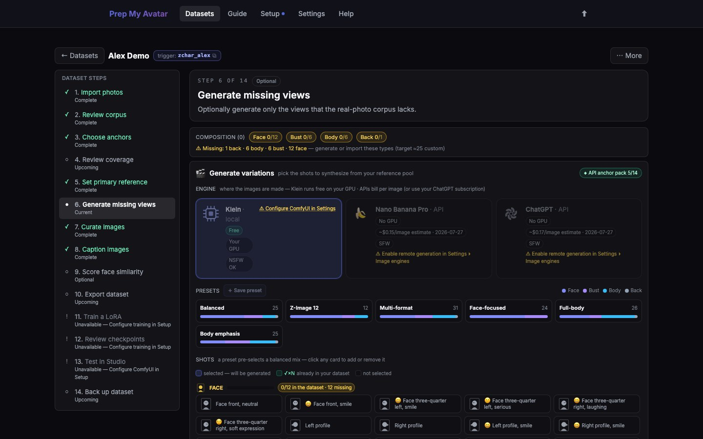

First run · 13 of 21
Step 13: Generate missing views
Generation is optional. Use it only for real coverage gaps that you cannot fill with suitable source photos. Generated images are candidates and never enter training until you accept them.
This guided gap generator is Character-only. Concept and Style datasets do not show it; add more examples with Import, or use the Concept scraper when appropriate, then continue to curation.

Before you begin
You need a tested Gemini, Replicate, or OpenAI credential, or a working local Klein setup. Before remote generation, explicitly enable remote-generation privacy in Settings → Image engines. Remote providers may charge per request and receive the prompt plus the bounded anchor pack.
Do this
- Open Generate missing views in the dataset step navigator. Its URL ends in
/generateand it is labelled Optional. - Review the recommended shots. Remove any shot you do not actually need.
- Choose the configured engine and model.
- Keep the multiplier at one for the first attempt.
- Read the estimated request count and cost information.
- Start generation and wait for the results. Use Stop generation if early results show that the prompt or identity is wrong.
- Use the edit control on an individual result to correct its prompt and regenerate that shot only.
- Select Continue to Curate images, or Skip optional step when real photos already provide enough coverage.
You are finished when
For Character, every requested generation has completed or been stopped and each result awaits review, or you deliberately skipped generation. Concept and Style navigators omit this page and go from review directly to curation.